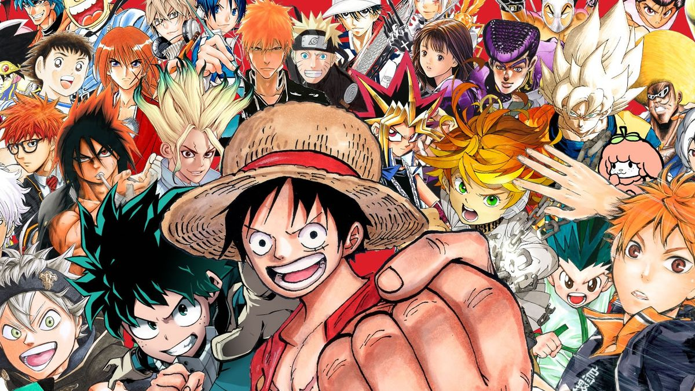

A INCRÍVEL CULTURA JAPONESA
Culinária
A culinária japonesa é marcada pela simplicidade e frescor dos ingredientes, com pratos icônicos como sushi, sashimi, ramen e tempura. A apresentação e o equilíbrio de sabores, como o uso de umami, são essenciais. Cada refeição é um reflexo da precisão e do respeito pela natureza dos alimentos.
Samurais
Os samurais eram guerreiros do Japão feudal, conhecidos por sua disciplina, honra e lealdade. Seguiam o código de conduta chamado bushido, que enfatizava valores como coragem, respeito e lealdade. Sua habilidade com a espada e seu compromisso com a justiça marcaram a história do Japão.
Animes
Os animes são animações japonesas que conquistaram o mundo com suas histórias envolventes e personagens complexos. Eles abordam uma vasta gama de gêneros, de ação a romance, e frequentemente exploram temas profundos como amizade, superação e moralidade, cativando fãs de todas as idades.
